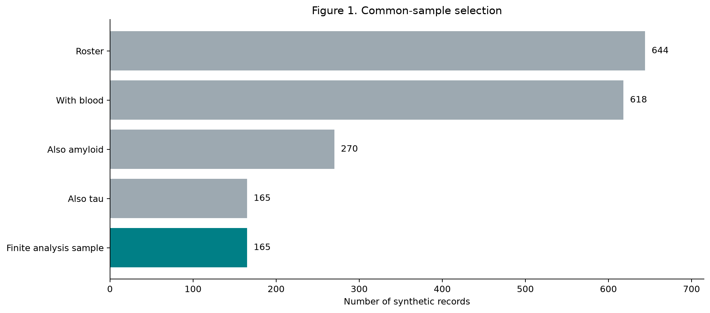
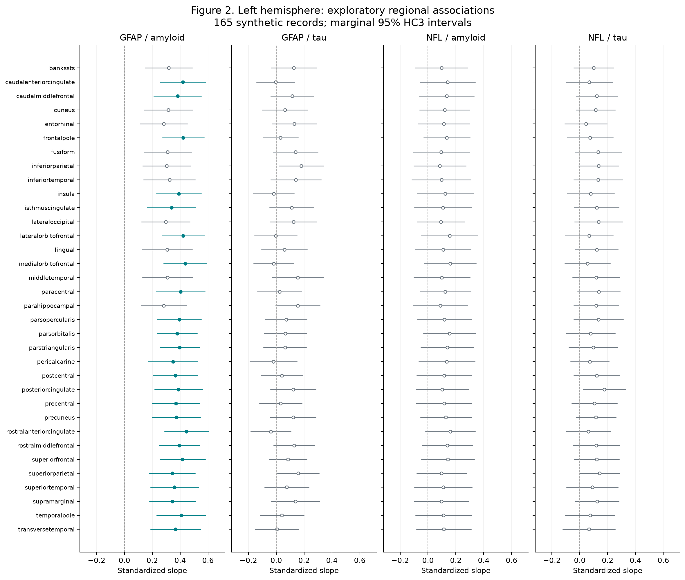
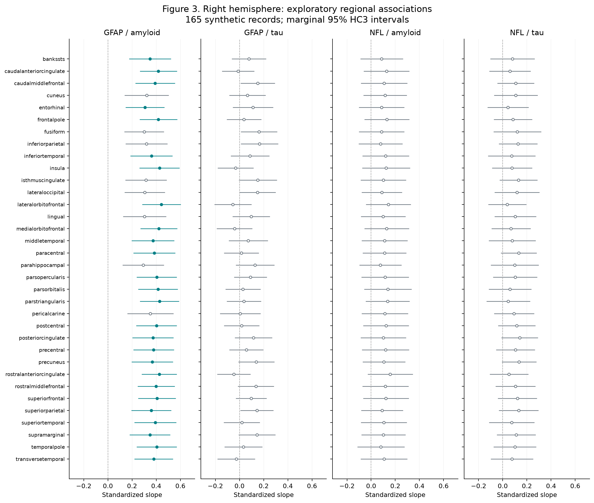
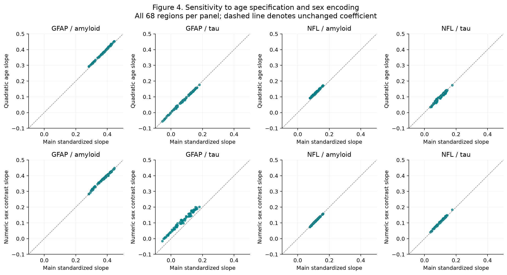
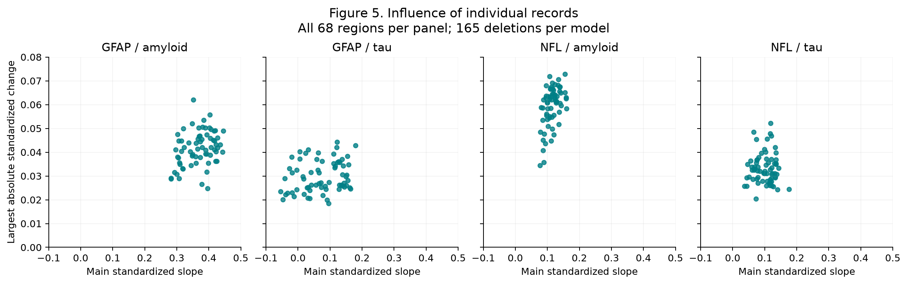

165 synthetic records. Original H1–H4 unassessed. See Results_Report.md for scope and limitations. Tables here are rounded; CSV files retain numeric precision.





| stage | n | excluded_since_previous |
|---|---|---|
| roster | 644 | 0 |
| blood | 618 | 26 |
| amyloid | 270 | 348 |
| tau | 165 | 105 |
| common_finite | 165 | 0 |
| outcome | predictor | tests | Holm_passes | standardized_beta_min | standardized_beta_max | Holm_p_min | Holm_p_max |
|---|---|---|---|---|---|---|---|
| GFAP | amyloid | 68 | 50 | 0.28248 | 0.44536 | 7.54672e-06 | 0.2416 |
| GFAP | tau | 68 | 0 | -0.0548219 | 0.179218 | 1 | 1 |
| NFL | amyloid | 68 | 0 | 0.0770398 | 0.159892 | 1 | 1 |
| NFL | tau | 68 | 0 | 0.0368826 | 0.175914 | 1 | 1 |
| hypothesis | association | original_status | regional_evidence |
|---|---|---|---|
| H1 | GFAP–amyloid | Unassessed as originally specified | 50/68 positive regional findings; direction consistent with expectation, not confirmation |
| H2 | GFAP–tau | Unassessed as originally specified | 0/68 adjusted findings; exploratory evidence inconclusive, not evidence of absence |
| H3 | NFL–amyloid | Unassessed as originally specified | 0/68 adjusted findings; exploratory evidence inconclusive, not evidence of absence |
| H4 | NFL–tau | Unassessed as originally specified | 0/68 adjusted findings; exploratory evidence inconclusive, not evidence of absence |
| scope | outcome | predictor | n_tests | quadratic_age_sign_reversals | quadratic_age_median_abs_standardized_change | quadratic_age_max_abs_standardized_change | quadratic_age_median_abs_percent_change | quadratic_age_max_abs_percent_change | numeric_sex_contrast_sign_reversals | numeric_sex_contrast_median_abs_standardized_change | numeric_sex_contrast_max_abs_standardized_change | numeric_sex_contrast_median_abs_percent_change | numeric_sex_contrast_max_abs_percent_change | loo_ranges_crossing_zero | loo_max_abs_standardized_change | SE_ratio_min | SE_ratio_max |
|---|---|---|---|---|---|---|---|---|---|---|---|---|---|---|---|---|---|
| all_272 | GFAP | amyloid | 68 | 0 | 0.00750833 | 0.0134016 | 2.05669 | 4.18007 | 0 | 0.00514312 | 0.0130853 | 1.39798 | 3.85367 | 0 | 0.0619553 | 0.963343 | 1.24243 |
| all_272 | GFAP | tau | 68 | 0 | 0.00213147 | 0.00855878 | 2.98159 | 72.7185 | 10 | 0.0403706 | 0.0557432 | 49.3982 | 1104.22 | 14 | 0.0442878 | 0.775817 | 1.10769 |
| all_272 | NFL | amyloid | 68 | 0 | 0.0117634 | 0.0172215 | 10.506 | 19.6923 | 0 | 0.000803164 | 0.00347842 | 0.758386 | 4.06154 | 0 | 0.072879 | 0.995815 | 1.27317 |
| all_272 | NFL | tau | 68 | 0 | 0.00333301 | 0.0129975 | 3.65761 | 17.9892 | 0 | 0.0057793 | 0.0109155 | 6.20491 | 15.946 | 0 | 0.0522666 | 0.789595 | 1.0958 |
| base_Holm_pass_50 | GFAP | amyloid | 50 | 0 | 0.00718253 | 0.0134016 | 1.93222 | 3.17241 | 0 | 0.00454113 | 0.0130853 | 1.15121 | 3.81849 | 0 | 0.0557493 | 0.963343 | 1.21528 |
| region | outcome | predictor | n | df_resid | beta | se_HC3 | t_HC3 | ci95_low | ci95_high | p_raw | standardized_beta | standardized_ci95_low | standardized_ci95_high | partial_R2 | p_Holm_272 | passes_Holm_0_05 |
|---|---|---|---|---|---|---|---|---|---|---|---|---|---|---|---|---|
| ctx-lh-bankssts | GFAP | amyloid | 165 | 160 | 11.5203 | 3.1001 | 3.71609 | 5.39787 | 17.6427 | 0.000279263 | 0.31794 | 0.148972 | 0.486908 | 0.0930999 | 0.0619964 | False |
| ctx-lh-bankssts | GFAP | tau | 165 | 160 | 4.59495 | 2.98113 | 1.54135 | -1.29248 | 10.4824 | 0.125208 | 0.126813 | -0.0356704 | 0.289296 | 0.0155539 | 1 | False |
| ctx-lh-bankssts | NFL | amyloid | 165 | 160 | 1.11822 | 1.09089 | 1.02506 | -1.03617 | 3.27262 | 0.306883 | 0.0968641 | -0.0897565 | 0.283485 | 0.00836105 | 1 | False |
| ctx-lh-bankssts | NFL | tau | 165 | 160 | 1.14193 | 0.832477 | 1.37173 | -0.502126 | 2.786 | 0.172068 | 0.098918 | -0.0434957 | 0.241332 | 0.00843484 | 1 | False |
| ctx-lh-caudalanteriorcingulate | GFAP | amyloid | 165 | 160 | 15.2144 | 2.9807 | 5.10431 | 9.32784 | 21.101 | 9.31999e-07 | 0.419894 | 0.257433 | 0.582354 | 0.171746 | 0.000238592 | True |
| ctx-lh-caudalanteriorcingulate | GFAP | tau | 165 | 160 | -0.147607 | 2.51522 | -0.0586855 | -5.11493 | 4.81971 | 0.953276 | -0.00407371 | -0.141164 | 0.133016 | 1.61161e-05 | 1 | False |
| ctx-lh-caudalanteriorcingulate | NFL | amyloid | 165 | 160 | 1.61459 | 1.15712 | 1.39535 | -0.670608 | 3.89979 | 0.164843 | 0.139861 | -0.0580902 | 0.337812 | 0.0193436 | 1 | False |
| ctx-lh-caudalanteriorcingulate | NFL | tau | 165 | 160 | 0.787959 | 0.982098 | 0.802321 | -1.15159 | 2.72751 | 0.423557 | 0.0682555 | -0.0997543 | 0.236265 | 0.00386422 | 1 | False |
| ctx-lh-caudalmiddlefrontal | GFAP | amyloid | 165 | 160 | 13.8077 | 3.12982 | 4.41167 | 7.62662 | 19.9888 | 1.87689e-05 | 0.38107 | 0.210482 | 0.551657 | 0.142154 | 0.00448578 | True |
| ctx-lh-caudalmiddlefrontal | GFAP | tau | 165 | 160 | 4.15368 | 2.80125 | 1.4828 | -1.37851 | 9.68587 | 0.140095 | 0.114635 | -0.0380445 | 0.267314 | 0.0131144 | 1 | False |
| ctx-lh-caudalmiddlefrontal | NFL | amyloid | 165 | 160 | 1.54644 | 1.14611 | 1.3493 | -0.717003 | 3.80989 | 0.179146 | 0.133958 | -0.0621091 | 0.330025 | 0.0172641 | 1 | False |
| ctx-lh-caudalmiddlefrontal | NFL | tau | 165 | 160 | 1.41351 | 0.867654 | 1.62911 | -0.300026 | 3.12704 | 0.105257 | 0.122442 | -0.0259892 | 0.270874 | 0.012839 | 1 | False |
| ctx-lh-cuneus | GFAP | amyloid | 165 | 160 | 11.4093 | 3.21961 | 3.5437 | 5.05092 | 17.7677 | 0.000517401 | 0.314879 | 0.139397 | 0.49036 | 0.0941164 | 0.111241 | False |
| ctx-lh-cuneus | GFAP | tau | 165 | 160 | 2.31117 | 2.98962 | 0.773062 | -3.59305 | 8.21538 | 0.440626 | 0.0637844 | -0.0991622 | 0.226731 | 0.00379867 | 1 | False |
| ctx-lh-cuneus | NFL | amyloid | 165 | 160 | 1.38185 | 1.04804 | 1.31851 | -0.687932 | 3.45164 | 0.189219 | 0.119701 | -0.0595909 | 0.298992 | 0.0137897 | 1 | False |
| ctx-lh-cuneus | NFL | tau | 165 | 160 | 1.31949 | 0.807016 | 1.63502 | -0.274288 | 2.91327 | 0.10401 | 0.114298 | -0.0237597 | 0.252356 | 0.0112745 | 1 | False |
| ctx-lh-entorhinal | GFAP | amyloid | 165 | 160 | 10.2444 | 3.10116 | 3.30341 | 4.11991 | 16.3689 | 0.00117853 | 0.282728 | 0.113703 | 0.451754 | 0.0701082 | 0.2416 | False |
| ctx-lh-entorhinal | GFAP | tau | 165 | 160 | 4.70989 | 2.95696 | 1.59281 | -1.12982 | 10.5496 | 0.113176 | 0.129985 | -0.0311812 | 0.291151 | 0.0134194 | 1 | False |
| ctx-lh-entorhinal | NFL | amyloid | 165 | 160 | 1.31169 | 1.06901 | 1.22701 | -0.799501 | 3.42288 | 0.22162 | 0.113623 | -0.0692553 | 0.296501 | 0.0108438 | 1 | False |
| ctx-lh-entorhinal | NFL | tau | 165 | 160 | 0.509889 | 0.884873 | 0.576228 | -1.23765 | 2.25743 | 0.56527 | 0.0441682 | -0.107209 | 0.195545 | 0.00141191 | 1 | False |
| ctx-lh-frontalpole | GFAP | amyloid | 165 | 160 | 15.3067 | 2.74881 | 5.56851 | 9.87813 | 20.7354 | 1.06299e-07 | 0.422441 | 0.27262 | 0.572262 | 0.177895 | 2.85944e-05 | True |
| ctx-lh-frontalpole | GFAP | tau | 165 | 160 | 1.12266 | 2.31036 | 0.485926 | -3.44007 | 5.6854 | 0.627685 | 0.0309837 | -0.0949404 | 0.156908 | 0.000970781 | 1 | False |
| ctx-lh-frontalpole | NFL | amyloid | 165 | 160 | 1.56187 | 0.966481 | 1.61604 | -0.346838 | 3.47057 | 0.108057 | 0.135294 | -0.0300442 | 0.300632 | 0.0183517 | 1 | False |
| ctx-lh-frontalpole | NFL | tau | 165 | 160 | 0.864942 | 0.961927 | 0.899177 | -1.03477 | 2.76465 | 0.36991 | 0.074924 | -0.0896349 | 0.239483 | 0.00476326 | 1 | False |
| ctx-lh-fusiform | GFAP | amyloid | 165 | 160 | 11.2314 | 3.11459 | 3.60605 | 5.08037 | 17.3824 | 0.000414996 | 0.309968 | 0.14021 | 0.479725 | 0.0824908 | 0.0896392 | False |
| ctx-lh-fusiform | GFAP | tau | 165 | 160 | 5.03671 | 2.92133 | 1.72411 | -0.732631 | 10.8061 | 0.0866185 | 0.139005 | -0.0202194 | 0.298229 | 0.016083 | 1 | False |
| ctx-lh-fusiform | NFL | amyloid | 165 | 160 | 1.10215 | 1.1719 | 0.940479 | -1.21224 | 3.41655 | 0.34839 | 0.0954719 | -0.105009 | 0.295952 | 0.00751121 | 1 | False |
| ctx-lh-fusiform | NFL | tau | 165 | 160 | 1.53583 | 0.980155 | 1.56692 | -0.399885 | 3.47154 | 0.119109 | 0.133038 | -0.0346393 | 0.300716 | 0.0131111 | 1 | False |
| ctx-lh-inferiorparietal | GFAP | amyloid | 165 | 160 | 10.9764 | 3.13072 | 3.50603 | 4.79353 | 17.1593 | 0.000590334 | 0.302931 | 0.132294 | 0.473567 | 0.0847338 | 0.126332 | False |
| ctx-lh-inferiorparietal | GFAP | tau | 165 | 160 | 6.49379 | 2.91459 | 2.22803 | 0.73776 | 12.2498 | 0.027273 | 0.179218 | 0.020361 | 0.338075 | 0.0298261 | 1 | False |
| ctx-lh-inferiorparietal | NFL | amyloid | 165 | 160 | 0.982937 | 1.09306 | 0.899251 | -1.17575 | 3.14162 | 0.36987 | 0.0851451 | -0.101847 | 0.272138 | 0.00633346 | 1 | False |
| ctx-lh-inferiorparietal | NFL | tau | 165 | 160 | 1.56312 | 0.83882 | 1.86348 | -0.0934645 | 3.21971 | 0.0642278 | 0.135403 | -0.00809619 | 0.278902 | 0.0150628 | 1 | False |
| ctx-lh-inferiortemporal | GFAP | amyloid | 165 | 160 | 11.7201 | 3.38162 | 3.46582 | 5.04174 | 18.3985 | 0.000678774 | 0.323456 | 0.139144 | 0.507768 | 0.083017 | 0.1439 | False |
| ctx-lh-inferiortemporal | GFAP | tau | 165 | 160 | 5.12024 | 3.30006 | 1.55156 | -1.39706 | 11.6375 | 0.122744 | 0.14131 | -0.0385565 | 0.321177 | 0.0158136 | 1 | False |
| ctx-lh-inferiortemporal | NFL | amyloid | 165 | 160 | 1.10916 | 1.23429 | 0.898622 | -1.32844 | 3.54675 | 0.370204 | 0.0960788 | -0.115074 | 0.307231 | 0.00691423 | 1 | False |
| ctx-lh-inferiortemporal | NFL | tau | 165 | 160 | 1.52868 | 1.0239 | 1.493 | -0.493419 | 3.55077 | 0.137407 | 0.132419 | -0.0427415 | 0.307579 | 0.0121485 | 1 | False |
| ctx-lh-insula | GFAP | amyloid | 165 | 160 | 14.1446 | 2.92759 | 4.83148 | 8.36291 | 19.9263 | 3.15063e-06 | 0.390368 | 0.230803 | 0.549934 | 0.139545 | 0.000787657 | True |
| ctx-lh-insula | GFAP | tau | 165 | 160 | -0.65977 | 2.69898 | -0.244452 | -5.98998 | 4.67044 | 0.807194 | -0.0182086 | -0.165314 | 0.128896 | 0.000283527 | 1 | False |
| ctx-lh-insula | NFL | amyloid | 165 | 160 | 1.4358 | 1.17967 | 1.21713 | -0.893921 | 3.76553 | 0.225348 | 0.124374 | -0.0774343 | 0.326182 | 0.014385 | 1 | False |
| ctx-lh-insula | NFL | tau | 165 | 160 | 0.903154 | 0.987073 | 0.914982 | -1.04622 | 2.85253 | 0.361578 | 0.0782341 | -0.0906268 | 0.247095 | 0.00462013 | 1 | False |
| ctx-lh-isthmuscingulate | GFAP | amyloid | 165 | 160 | 12.2364 | 3.18254 | 3.84484 | 5.95115 | 18.5216 | 0.000173766 | 0.337703 | 0.164242 | 0.511165 | 0.10814 | 0.0388912 | True |
| ctx-lh-isthmuscingulate | GFAP | tau | 165 | 160 | 4.04392 | 2.90721 | 1.391 | -1.69752 | 9.78536 | 0.166157 | 0.111606 | -0.0468489 | 0.27006 | 0.01192 | 1 | False |
| ctx-lh-isthmuscingulate | NFL | amyloid | 165 | 160 | 1.2389 | 1.19517 | 1.03659 | -1.12144 | 3.59925 | 0.30149 | 0.107318 | -0.0971428 | 0.311779 | 0.0107609 | 1 | False |
| ctx-lh-isthmuscingulate | NFL | tau | 165 | 160 | 1.39989 | 0.932987 | 1.50044 | -0.442663 | 3.24245 | 0.13547 | 0.121263 | -0.0383449 | 0.280871 | 0.0124938 | 1 | False |
| ctx-lh-lateraloccipital | GFAP | amyloid | 165 | 160 | 10.7636 | 3.17972 | 3.38509 | 4.48401 | 17.0433 | 0.000895152 | 0.297059 | 0.123751 | 0.470367 | 0.0800838 | 0.185296 | False |
| ctx-lh-lateraloccipital | GFAP | tau | 165 | 160 | 4.46589 | 3.04095 | 1.46858 | -1.53969 | 10.4715 | 0.143909 | 0.123251 | -0.042493 | 0.288995 | 0.0131511 | 1 | False |
| ctx-lh-lateraloccipital | NFL | amyloid | 165 | 160 | 1.07637 | 0.997333 | 1.07925 | -0.893264 | 3.04601 | 0.282101 | 0.0932387 | -0.0773774 | 0.263855 | 0.00778804 | 1 | False |
| ctx-lh-lateraloccipital | NFL | tau | 165 | 160 | 1.55809 | 0.99847 | 1.56048 | -0.413789 | 3.52997 | 0.120623 | 0.134967 | -0.0358437 | 0.305777 | 0.0144144 | 1 | False |
| ctx-lh-lateralorbitofrontal | GFAP | amyloid | 165 | 160 | 15.2754 | 2.79642 | 5.46248 | 9.75275 | 20.7981 | 1.76386e-07 | 0.421576 | 0.26916 | 0.573992 | 0.163199 | 4.65658e-05 | True |
| ctx-lh-lateralorbitofrontal | GFAP | tau | 165 | 160 | -0.14509 | 2.78747 | -0.0520507 | -5.65006 | 5.35988 | 0.958553 | -0.00400424 | -0.155932 | 0.147924 | 1.42833e-05 | 1 | False |
| ctx-lh-lateralorbitofrontal | NFL | amyloid | 165 | 160 | 1.78716 | 1.17315 | 1.52338 | -0.529699 | 4.10401 | 0.129637 | 0.154809 | -0.0458842 | 0.355503 | 0.0221754 | 1 | False |
| ctx-lh-lateralorbitofrontal | NFL | tau | 165 | 160 | 0.776307 | 1.0073 | 0.770684 | -1.213 | 2.76562 | 0.442031 | 0.0672462 | -0.105074 | 0.239567 | 0.00346178 | 1 | False |
| ctx-lh-lingual | GFAP | amyloid | 165 | 160 | 11.1014 | 3.29419 | 3.37 | 4.59571 | 17.6071 | 0.000942173 | 0.306381 | 0.126834 | 0.485928 | 0.083596 | 0.194088 | False |
| ctx-lh-lingual | GFAP | tau | 165 | 160 | 2.11723 | 3.00298 | 0.705041 | -3.81337 | 8.04782 | 0.48181 | 0.058432 | -0.105243 | 0.222107 | 0.0028808 | 1 | False |
| ctx-lh-lingual | NFL | amyloid | 165 | 160 | 1.25741 | 1.16576 | 1.07863 | -1.04484 | 3.55966 | 0.282378 | 0.108921 | -0.0905073 | 0.30835 | 0.0106955 | 1 | False |
| ctx-lh-lingual | NFL | tau | 165 | 160 | 1.39718 | 0.896077 | 1.55922 | -0.37248 | 3.16685 | 0.120919 | 0.121029 | -0.0322654 | 0.274322 | 0.0114893 | 1 | False |
| ctx-lh-medialorbitofrontal | GFAP | amyloid | 165 | 160 | 15.8042 | 2.81419 | 5.61588 | 10.2464 | 21.3619 | 8.46082e-08 | 0.436169 | 0.282784 | 0.589554 | 0.182624 | 2.29288e-05 | True |
| ctx-lh-medialorbitofrontal | GFAP | tau | 165 | 160 | -0.646229 | 2.63428 | -0.245315 | -5.84868 | 4.55622 | 0.806527 | -0.0178349 | -0.161414 | 0.125744 | 0.000307677 | 1 | False |
| ctx-lh-medialorbitofrontal | NFL | amyloid | 165 | 160 | 1.83075 | 1.08731 | 1.68374 | -0.316586 | 3.97809 | 0.0941822 | 0.158585 | -0.0274237 | 0.344595 | 0.0244861 | 1 | False |
| ctx-lh-medialorbitofrontal | NFL | tau | 165 | 160 | 0.643256 | 0.946977 | 0.679273 | -1.22693 | 2.51344 | 0.497946 | 0.0557209 | -0.106281 | 0.217723 | 0.00254656 | 1 | False |
| ctx-lh-middletemporal | GFAP | amyloid | 165 | 160 | 11.1915 | 3.29256 | 3.39902 | 4.68898 | 17.6939 | 0.000853723 | 0.308866 | 0.129408 | 0.488324 | 0.0779459 | 0.178428 | False |
| ctx-lh-middletemporal | GFAP | tau | 165 | 160 | 5.61487 | 3.40696 | 1.64806 | -1.11353 | 12.3433 | 0.101303 | 0.154961 | -0.0307317 | 0.340654 | 0.0189289 | 1 | False |
| ctx-lh-middletemporal | NFL | amyloid | 165 | 160 | 1.154 | 1.17932 | 0.978527 | -1.17505 | 3.48305 | 0.329291 | 0.0999632 | -0.101786 | 0.301713 | 0.00767812 | 1 | False |
| ctx-lh-middletemporal | NFL | tau | 165 | 160 | 1.35388 | 0.986327 | 1.37265 | -0.594018 | 3.30178 | 0.171782 | 0.117277 | -0.0514557 | 0.286011 | 0.00956442 | 1 | False |
| ctx-lh-paracentral | GFAP | amyloid | 165 | 160 | 14.6081 | 3.21832 | 4.53905 | 8.25224 | 20.964 | 1.10514e-05 | 0.40316 | 0.227748 | 0.578571 | 0.159791 | 0.00269653 | True |
| ctx-lh-paracentral | GFAP | tau | 165 | 160 | 0.846689 | 2.89614 | 0.29235 | -4.87291 | 6.56629 | 0.770398 | 0.0233672 | -0.134484 | 0.181219 | 0.000533684 | 1 | False |
| ctx-lh-paracentral | NFL | amyloid | 165 | 160 | 1.43812 | 1.06583 | 1.34929 | -0.666791 | 3.54303 | 0.179149 | 0.124574 | -0.0577596 | 0.306908 | 0.0156988 | 1 | False |
| ctx-lh-paracentral | NFL | tau | 165 | 160 | 1.58408 | 0.887849 | 1.78418 | -0.169333 | 3.3375 | 0.0762898 | 0.137218 | -0.0146682 | 0.289105 | 0.0159157 | 1 | False |
| ctx-lh-parahippocampal | GFAP | amyloid | 165 | 160 | 10.2354 | 3.00152 | 3.41006 | 4.30768 | 16.1631 | 0.000822141 | 0.28248 | 0.118885 | 0.446075 | 0.0687926 | 0.17265 | False |
| ctx-lh-parahippocampal | GFAP | tau | 165 | 160 | 5.6352 | 2.89759 | 1.94479 | -0.0872569 | 11.3577 | 0.0535539 | 0.155522 | -0.00240815 | 0.313453 | 0.0188571 | 1 | False |
| ctx-lh-parahippocampal | NFL | amyloid | 165 | 160 | 1.01472 | 1.14661 | 0.884979 | -1.24971 | 3.27916 | 0.377496 | 0.0878985 | -0.108254 | 0.284051 | 0.00636381 | 1 | False |
| ctx-lh-parahippocampal | NFL | tau | 165 | 160 | 1.35119 | 0.937803 | 1.4408 | -0.500878 | 3.20326 | 0.151594 | 0.117044 | -0.0433877 | 0.277477 | 0.0096528 | 1 | False |
| ctx-lh-parsopercularis | GFAP | amyloid | 165 | 160 | 14.2601 | 2.87895 | 4.95323 | 8.57446 | 19.9457 | 1.83962e-06 | 0.393555 | 0.236641 | 0.550469 | 0.149016 | 0.000465423 | True |
| ctx-lh-parsopercularis | GFAP | tau | 165 | 160 | 2.58052 | 2.72547 | 0.946814 | -2.80203 | 7.96306 | 0.345161 | 0.071218 | -0.0773313 | 0.219767 | 0.00465471 | 1 | False |
| ctx-lh-parsopercularis | NFL | amyloid | 165 | 160 | 1.35275 | 1.1323 | 1.1947 | -0.883423 | 3.58893 | 0.233973 | 0.11718 | -0.0765249 | 0.310885 | 0.0132342 | 1 | False |
| ctx-lh-parsopercularis | NFL | tau | 165 | 160 | 1.55949 | 1.03226 | 1.51076 | -0.479114 | 3.59809 | 0.132822 | 0.135088 | -0.0415024 | 0.311678 | 0.0143279 | 1 | False |
| ctx-lh-parsorbitalis | GFAP | amyloid | 165 | 160 | 13.684 | 2.62945 | 5.20412 | 8.49108 | 18.8769 | 5.90372e-07 | 0.377656 | 0.23434 | 0.520971 | 0.136463 | 0.000152316 | True |
| ctx-lh-parsorbitalis | GFAP | tau | 165 | 160 | 2.37136 | 2.79602 | 0.848122 | -3.15049 | 7.89322 | 0.397637 | 0.0654457 | -0.0869484 | 0.21784 | 0.00370185 | 1 | False |
| ctx-lh-parsorbitalis | NFL | amyloid | 165 | 160 | 1.78409 | 1.09018 | 1.63651 | -0.368914 | 3.93709 | 0.103699 | 0.154543 | -0.0319565 | 0.341043 | 0.02273 | 1 | False |
| ctx-lh-parsorbitalis | NFL | tau | 165 | 160 | 0.913254 | 1.02281 | 0.892887 | -1.1067 | 2.9332 | 0.373259 | 0.079109 | -0.0958655 | 0.254084 | 0.00474889 | 1 | False |
| ctx-lh-parstriangularis | GFAP | amyloid | 165 | 160 | 14.3739 | 2.58318 | 5.56443 | 9.2724 | 19.4754 | 1.084e-07 | 0.396697 | 0.255903 | 0.53749 | 0.152248 | 2.90511e-05 | True |
| ctx-lh-parstriangularis | GFAP | tau | 165 | 160 | 2.26323 | 2.82205 | 0.801979 | -3.31005 | 7.8365 | 0.423755 | 0.0624613 | -0.0913519 | 0.216275 | 0.00350169 | 1 | False |
| ctx-lh-parstriangularis | NFL | amyloid | 165 | 160 | 1.59696 | 1.10901 | 1.43998 | -0.593228 | 3.78714 | 0.151826 | 0.138333 | -0.0513873 | 0.328054 | 0.0184781 | 1 | False |
| ctx-lh-parstriangularis | NFL | tau | 165 | 160 | 1.11769 | 1.02352 | 1.092 | -0.903668 | 3.13905 | 0.276473 | 0.0968181 | -0.0782786 | 0.271915 | 0.00722568 | 1 | False |
| ctx-lh-pericalcarine | GFAP | amyloid | 165 | 160 | 12.6078 | 3.25484 | 3.87356 | 6.17983 | 19.0358 | 0.000156061 | 0.347955 | 0.170553 | 0.525357 | 0.110568 | 0.0351137 | True |
| ctx-lh-pericalcarine | GFAP | tau | 165 | 160 | -0.724364 | 3.11421 | -0.232599 | -6.87463 | 5.4259 | 0.81637 | -0.0199913 | -0.189728 | 0.149746 | 0.000347518 | 1 | False |
| ctx-lh-pericalcarine | NFL | amyloid | 165 | 160 | 1.5605 | 1.17293 | 1.33043 | -0.755916 | 3.87692 | 0.185269 | 0.135176 | -0.0654799 | 0.335831 | 0.0170795 | 1 | False |
| ctx-lh-pericalcarine | NFL | tau | 165 | 160 | 0.837893 | 0.802861 | 1.04363 | -0.747678 | 2.42346 | 0.298229 | 0.0725809 | -0.0647663 | 0.209928 | 0.00422616 | 1 | False |
| ctx-lh-postcentral | GFAP | amyloid | 165 | 160 | 13.2261 | 2.92498 | 4.52178 | 7.44956 | 19.0026 | 1.18814e-05 | 0.365019 | 0.205596 | 0.524442 | 0.127916 | 0.00288717 | True |
| ctx-lh-postcentral | GFAP | tau | 165 | 160 | 1.4842 | 2.72416 | 0.54483 | -3.89574 | 6.86414 | 0.586629 | 0.0409615 | -0.107516 | 0.189439 | 0.00150079 | 1 | False |
| ctx-lh-postcentral | NFL | amyloid | 165 | 160 | 1.33686 | 1.14071 | 1.17195 | -0.915937 | 3.58965 | 0.242959 | 0.115803 | -0.0793414 | 0.310947 | 0.0131064 | 1 | False |
| ctx-lh-postcentral | NFL | tau | 165 | 160 | 1.40917 | 0.956891 | 1.47265 | -0.480599 | 3.29893 | 0.142809 | 0.122067 | -0.041631 | 0.285764 | 0.011865 | 1 | False |
| ctx-lh-posteriorcingulate | GFAP | amyloid | 165 | 160 | 14.0889 | 3.15568 | 4.4646 | 7.8567 | 20.321 | 1.50803e-05 | 0.388829 | 0.216832 | 0.560827 | 0.149203 | 0.00361926 | True |
| ctx-lh-posteriorcingulate | GFAP | tau | 165 | 160 | 4.43069 | 2.97497 | 1.48932 | -1.44459 | 10.306 | 0.138371 | 0.12228 | -0.0398682 | 0.284428 | 0.0149182 | 1 | False |
| ctx-lh-posteriorcingulate | NFL | amyloid | 165 | 160 | 1.17414 | 1.10052 | 1.0669 | -0.999272 | 3.34756 | 0.287625 | 0.101708 | -0.0865602 | 0.289976 | 0.0101262 | 1 | False |
| ctx-lh-posteriorcingulate | NFL | tau | 165 | 160 | 2.03079 | 0.888951 | 2.28448 | 0.275201 | 3.78638 | 0.0236575 | 0.175914 | 0.0238388 | 0.327989 | 0.0260259 | 1 | False |
| ctx-lh-precentral | GFAP | amyloid | 165 | 160 | 13.3983 | 3.08511 | 4.34289 | 7.30551 | 19.4911 | 2.48732e-05 | 0.369771 | 0.20162 | 0.537922 | 0.129138 | 0.00587007 | True |
| ctx-lh-precentral | GFAP | tau | 165 | 160 | 1.17368 | 2.79342 | 0.420158 | -4.34306 | 6.69042 | 0.674934 | 0.0323916 | -0.119861 | 0.184645 | 0.000929155 | 1 | False |
| ctx-lh-precentral | NFL | amyloid | 165 | 160 | 1.32593 | 1.16392 | 1.13919 | -0.972699 | 3.62456 | 0.256325 | 0.114856 | -0.0842583 | 0.313971 | 0.0126245 | 1 | False |
| ctx-lh-precentral | NFL | tau | 165 | 160 | 1.21241 | 0.95028 | 1.27585 | -0.664298 | 3.08912 | 0.203859 | 0.105023 | -0.0575436 | 0.26759 | 0.00866158 | 1 | False |
| ctx-lh-precuneus | GFAP | amyloid | 165 | 160 | 13.4675 | 3.15623 | 4.26696 | 7.23424 | 19.7007 | 3.38191e-05 | 0.37168 | 0.199653 | 0.543707 | 0.139249 | 0.00791368 | True |
| ctx-lh-precuneus | GFAP | tau | 165 | 160 | 4.38252 | 3.00115 | 1.46028 | -1.54444 | 10.3095 | 0.146173 | 0.12095 | -0.0426241 | 0.284525 | 0.0160896 | 1 | False |
| ctx-lh-precuneus | NFL | amyloid | 165 | 160 | 1.48458 | 1.06362 | 1.39578 | -0.615965 | 3.58512 | 0.164715 | 0.128599 | -0.0533568 | 0.310554 | 0.0163993 | 1 | False |
| ctx-lh-precuneus | NFL | tau | 165 | 160 | 1.34824 | 0.832066 | 1.62035 | -0.295006 | 2.99149 | 0.107125 | 0.116789 | -0.0255544 | 0.259133 | 0.0129561 | 1 | False |
| ctx-lh-rostralanteriorcingulate | GFAP | amyloid | 165 | 160 | 16.1372 | 2.88704 | 5.58953 | 10.4356 | 21.8388 | 9.60728e-08 | 0.44536 | 0.288005 | 0.602716 | 0.192314 | 2.59397e-05 | True |
| ctx-lh-rostralanteriorcingulate | GFAP | tau | 165 | 160 | -1.41621 | 2.6295 | -0.538585 | -6.60922 | 3.77679 | 0.590922 | -0.0390851 | -0.182403 | 0.104233 | 0.00145306 | 1 | False |
| ctx-lh-rostralanteriorcingulate | NFL | amyloid | 165 | 160 | 1.84583 | 1.04269 | 1.77026 | -0.213377 | 3.90503 | 0.0785882 | 0.159892 | -0.0184834 | 0.338266 | 0.0253275 | 1 | False |
| ctx-lh-rostralanteriorcingulate | NFL | tau | 165 | 160 | 0.723329 | 0.926852 | 0.780415 | -1.10711 | 2.55377 | 0.4363 | 0.0626571 | -0.0959016 | 0.221216 | 0.00315646 | 1 | False |
| ctx-lh-rostralmiddlefrontal | GFAP | amyloid | 165 | 160 | 14.2493 | 2.64973 | 5.37763 | 9.01631 | 19.4822 | 2.63372e-07 | 0.393256 | 0.248835 | 0.537677 | 0.156211 | 6.92668e-05 | True |
| ctx-lh-rostralmiddlefrontal | GFAP | tau | 165 | 160 | 4.65669 | 2.69188 | 1.7299 | -0.65951 | 9.9729 | 0.0855761 | 0.128517 | -0.0182014 | 0.275236 | 0.0160384 | 1 | False |
| ctx-lh-rostralmiddlefrontal | NFL | amyloid | 165 | 160 | 1.60388 | 1.06124 | 1.51132 | -0.491968 | 3.69972 | 0.132679 | 0.138933 | -0.0426159 | 0.320482 | 0.0190402 | 1 | False |
| ctx-lh-rostralmiddlefrontal | NFL | tau | 165 | 160 | 1.35617 | 0.973457 | 1.39315 | -0.566311 | 3.27865 | 0.165507 | 0.117476 | -0.0490557 | 0.284007 | 0.011311 | 1 | False |
| ctx-lh-superiorfrontal | GFAP | amyloid | 165 | 160 | 15.0966 | 2.97955 | 5.06674 | 9.21229 | 20.9809 | 1.10509e-06 | 0.416641 | 0.254244 | 0.579039 | 0.170648 | 0.000281799 | True |
| ctx-lh-superiorfrontal | GFAP | tau | 165 | 160 | 3.06729 | 2.46961 | 1.24201 | -1.80995 | 7.94452 | 0.216049 | 0.0846521 | -0.0499516 | 0.219256 | 0.00692059 | 1 | False |
| ctx-lh-superiorfrontal | NFL | amyloid | 165 | 160 | 1.64311 | 1.10671 | 1.48468 | -0.542538 | 3.82875 | 0.139597 | 0.142331 | -0.0469964 | 0.331659 | 0.019787 | 1 | False |
| ctx-lh-superiorfrontal | NFL | tau | 165 | 160 | 1.40774 | 0.937478 | 1.50163 | -0.443684 | 3.25917 | 0.135164 | 0.121943 | -0.0384333 | 0.28232 | 0.0120108 | 1 | False |
| ctx-lh-superiorparietal | GFAP | amyloid | 165 | 160 | 12.4167 | 3.01731 | 4.11517 | 6.45785 | 18.3756 | 6.1781e-05 | 0.342682 | 0.178226 | 0.507137 | 0.113827 | 0.0140861 | True |
| ctx-lh-superiorparietal | GFAP | tau | 165 | 160 | 5.72696 | 2.74104 | 2.08933 | 0.313667 | 11.1402 | 0.03826 | 0.158055 | 0.00865669 | 0.307452 | 0.024976 | 1 | False |
| ctx-lh-superiorparietal | NFL | amyloid | 165 | 160 | 1.12947 | 1.03976 | 1.08628 | -0.923951 | 3.1829 | 0.278988 | 0.0978385 | -0.0800356 | 0.275713 | 0.00894666 | 1 | False |
| ctx-lh-superiorparietal | NFL | tau | 165 | 160 | 1.6598 | 0.821936 | 2.01938 | 0.0365579 | 3.28304 | 0.0451171 | 0.143777 | 0.00316676 | 0.284388 | 0.0179476 | 1 | False |
| ctx-lh-superiortemporal | GFAP | amyloid | 165 | 160 | 13.0374 | 3.152 | 4.13624 | 6.81255 | 19.2623 | 5.68763e-05 | 0.359812 | 0.188015 | 0.531608 | 0.115724 | 0.0131384 | True |
| ctx-lh-superiortemporal | GFAP | tau | 165 | 160 | 2.74104 | 2.91815 | 0.939306 | -3.02202 | 8.50409 | 0.348989 | 0.0756481 | -0.0834028 | 0.234699 | 0.00498242 | 1 | False |
| ctx-lh-superiortemporal | NFL | amyloid | 165 | 160 | 1.26635 | 1.20319 | 1.0525 | -1.10983 | 3.64253 | 0.294159 | 0.109695 | -0.096137 | 0.315528 | 0.0105612 | 1 | False |
| ctx-lh-superiortemporal | NFL | tau | 165 | 160 | 1.03755 | 1.07362 | 0.966406 | -1.08274 | 3.15785 | 0.3353 | 0.0898762 | -0.0937907 | 0.273543 | 0.00616423 | 1 | False |
| ctx-lh-supramarginal | GFAP | amyloid | 165 | 160 | 12.4673 | 3.02619 | 4.11979 | 6.49084 | 18.4437 | 6.06738e-05 | 0.344076 | 0.179136 | 0.509016 | 0.110824 | 0.0138943 | True |
| ctx-lh-supramarginal | GFAP | tau | 165 | 160 | 5.00159 | 3.17392 | 1.57584 | -1.26658 | 11.2698 | 0.117038 | 0.138036 | -0.0349556 | 0.311027 | 0.0175608 | 1 | False |
| ctx-lh-supramarginal | NFL | amyloid | 165 | 160 | 1.11614 | 1.14548 | 0.974388 | -1.14607 | 3.37835 | 0.331335 | 0.0966837 | -0.099276 | 0.292643 | 0.00843143 | 1 | False |
| ctx-lh-supramarginal | NFL | tau | 165 | 160 | 1.43669 | 0.910783 | 1.57742 | -0.362019 | 3.23539 | 0.116674 | 0.12445 | -0.0313592 | 0.28026 | 0.0123984 | 1 | False |
| ctx-lh-temporalpole | GFAP | amyloid | 165 | 160 | 14.7467 | 3.22916 | 4.56673 | 8.36943 | 21.124 | 9.83611e-06 | 0.406985 | 0.230983 | 0.582987 | 0.140196 | 0.00241968 | True |
| ctx-lh-temporalpole | GFAP | tau | 165 | 160 | 1.50394 | 2.87955 | 0.522282 | -4.18289 | 7.19077 | 0.602196 | 0.0415062 | -0.115441 | 0.198453 | 0.00141101 | 1 | False |
| ctx-lh-temporalpole | NFL | amyloid | 165 | 160 | 1.29702 | 1.17965 | 1.0995 | -1.03266 | 3.62671 | 0.273201 | 0.112352 | -0.0894527 | 0.314158 | 0.0103878 | 1 | False |
| ctx-lh-temporalpole | NFL | tau | 165 | 160 | 0.865704 | 1.03432 | 0.836982 | -1.17697 | 2.90838 | 0.403851 | 0.07499 | -0.101953 | 0.251933 | 0.00388104 | 1 | False |
| ctx-lh-transversetemporal | GFAP | amyloid | 165 | 160 | 13.34 | 3.28256 | 4.0639 | 6.85726 | 19.8227 | 7.54608e-05 | 0.368162 | 0.189249 | 0.547075 | 0.130371 | 0.0171296 | True |
| ctx-lh-transversetemporal | GFAP | tau | 165 | 160 | 0.211583 | 2.86398 | 0.0738773 | -5.4445 | 5.86767 | 0.9412 | 0.00583935 | -0.150259 | 0.161938 | 3.18669e-05 | 1 | False |
| ctx-lh-transversetemporal | NFL | amyloid | 165 | 160 | 1.31866 | 1.1441 | 1.15258 | -0.940819 | 3.57813 | 0.250804 | 0.114226 | -0.0814968 | 0.309949 | 0.0127319 | 1 | False |
| ctx-lh-transversetemporal | NFL | tau | 165 | 160 | 0.754342 | 1.09433 | 0.689321 | -1.40685 | 2.91553 | 0.49162 | 0.0653436 | -0.121866 | 0.252553 | 0.00355338 | 1 | False |
| ctx-rh-bankssts | GFAP | amyloid | 165 | 160 | 12.6532 | 3.13519 | 4.03588 | 6.46155 | 18.8449 | 8.41136e-05 | 0.349209 | 0.178328 | 0.520089 | 0.107706 | 0.0190097 | True |
| ctx-rh-bankssts | GFAP | tau | 165 | 160 | 2.81932 | 2.56783 | 1.09794 | -2.2519 | 7.89053 | 0.273882 | 0.0778085 | -0.0621488 | 0.217766 | 0.00569964 | 1 | False |
| ctx-rh-bankssts | NFL | amyloid | 165 | 160 | 1.00091 | 1.01648 | 0.984686 | -1.00653 | 3.00836 | 0.326265 | 0.0867022 | -0.087189 | 0.260593 | 0.00647745 | 1 | False |
| ctx-rh-bankssts | NFL | tau | 165 | 160 | 0.930768 | 1.05863 | 0.879221 | -1.15992 | 3.02145 | 0.3806 | 0.0806261 | -0.100476 | 0.261728 | 0.00536406 | 1 | False |
| ctx-rh-caudalanteriorcingulate | GFAP | amyloid | 165 | 160 | 15.1539 | 2.77007 | 5.47057 | 9.68325 | 20.6245 | 1.69735e-07 | 0.418222 | 0.267242 | 0.569201 | 0.166322 | 4.49798e-05 | True |
| ctx-rh-caudalanteriorcingulate | GFAP | tau | 165 | 160 | -0.447262 | 2.41306 | -0.185351 | -5.21282 | 4.3183 | 0.853189 | -0.0123437 | -0.143865 | 0.119178 | 0.000141549 | 1 | False |
| ctx-rh-caudalanteriorcingulate | NFL | amyloid | 165 | 160 | 1.47056 | 1.09279 | 1.3457 | -0.687584 | 3.62871 | 0.180303 | 0.127385 | -0.0595607 | 0.31433 | 0.0156081 | 1 | False |
| ctx-rh-caudalanteriorcingulate | NFL | tau | 165 | 160 | 0.693549 | 0.985056 | 0.704071 | -1.25184 | 2.63894 | 0.482412 | 0.0600774 | -0.108438 | 0.228593 | 0.0028646 | 1 | False |
| ctx-rh-caudalmiddlefrontal | GFAP | amyloid | 165 | 160 | 14.1564 | 2.96079 | 4.78128 | 8.3091 | 20.0036 | 3.9229e-06 | 0.390692 | 0.229317 | 0.552067 | 0.148987 | 0.000972879 | True |
| ctx-rh-caudalmiddlefrontal | GFAP | tau | 165 | 160 | 5.47376 | 2.56057 | 2.13772 | 0.416895 | 10.5306 | 0.0340587 | 0.151067 | 0.0115056 | 0.290628 | 0.022751 | 1 | False |
| ctx-rh-caudalmiddlefrontal | NFL | amyloid | 165 | 160 | 1.23244 | 1.10845 | 1.11185 | -0.956651 | 3.42153 | 0.267869 | 0.106758 | -0.0828682 | 0.296384 | 0.0104813 | 1 | False |
| ctx-rh-caudalmiddlefrontal | NFL | tau | 165 | 160 | 1.23754 | 0.878212 | 1.40916 | -0.496838 | 2.97192 | 0.160728 | 0.1072 | -0.0430377 | 0.257438 | 0.00940998 | 1 | False |
| ctx-rh-cuneus | GFAP | amyloid | 165 | 160 | 11.6253 | 3.31848 | 3.50319 | 5.07159 | 18.1789 | 0.000596208 | 0.320838 | 0.139968 | 0.501709 | 0.0954988 | 0.126992 | False |
| ctx-rh-cuneus | GFAP | tau | 165 | 160 | 2.3852 | 2.7226 | 0.876075 | -2.99167 | 7.76207 | 0.382303 | 0.0658277 | -0.0825651 | 0.21422 | 0.00391922 | 1 | False |
| ctx-rh-cuneus | NFL | amyloid | 165 | 160 | 1.32601 | 1.03477 | 1.28145 | -0.717571 | 3.36958 | 0.201891 | 0.114863 | -0.0621583 | 0.291884 | 0.0123267 | 1 | False |
| ctx-rh-cuneus | NFL | tau | 165 | 160 | 1.24365 | 1.04097 | 1.19471 | -0.81216 | 3.29946 | 0.23397 | 0.107729 | -0.0703519 | 0.28581 | 0.00962523 | 1 | False |
| ctx-rh-entorhinal | GFAP | amyloid | 165 | 160 | 11.137 | 2.89645 | 3.84506 | 5.41682 | 16.8572 | 0.000173621 | 0.307364 | 0.149495 | 0.465232 | 0.0832877 | 0.0388912 | True |
| ctx-rh-entorhinal | GFAP | tau | 165 | 160 | 4.01825 | 3.02273 | 1.32935 | -1.95134 | 9.98784 | 0.185626 | 0.110897 | -0.0538537 | 0.275648 | 0.0097449 | 1 | False |
| ctx-rh-entorhinal | NFL | amyloid | 165 | 160 | 0.988683 | 1.0833 | 0.912658 | -1.15073 | 3.12809 | 0.362796 | 0.0856428 | -0.0996799 | 0.270966 | 0.00622047 | 1 | False |
| ctx-rh-entorhinal | NFL | tau | 165 | 160 | 0.506505 | 0.978657 | 0.517551 | -1.42625 | 2.43926 | 0.605486 | 0.0438751 | -0.123546 | 0.211296 | 0.00136502 | 1 | False |
| ctx-rh-frontalpole | GFAP | amyloid | 165 | 160 | 15.152 | 2.81772 | 5.37741 | 9.5873 | 20.7167 | 2.63644e-07 | 0.418171 | 0.264594 | 0.571748 | 0.17748 | 6.92668e-05 | True |
| ctx-rh-frontalpole | GFAP | tau | 165 | 160 | 1.33692 | 2.5878 | 0.516624 | -3.77373 | 6.44757 | 0.606132 | 0.0368968 | -0.104149 | 0.177942 | 0.00135869 | 1 | False |
| ctx-rh-frontalpole | NFL | amyloid | 165 | 160 | 1.49729 | 1.07116 | 1.39783 | -0.618137 | 3.61272 | 0.1641 | 0.1297 | -0.053545 | 0.312945 | 0.0172235 | 1 | False |
| ctx-rh-frontalpole | NFL | tau | 165 | 160 | 0.97906 | 0.912077 | 1.07344 | -0.822202 | 2.78032 | 0.28469 | 0.0848093 | -0.0712218 | 0.24084 | 0.0060323 | 1 | False |
| ctx-rh-fusiform | GFAP | amyloid | 165 | 160 | 10.8786 | 2.95793 | 3.67778 | 5.03698 | 16.7202 | 0.000320885 | 0.300232 | 0.139012 | 0.461451 | 0.0780562 | 0.0702738 | False |
| ctx-rh-fusiform | GFAP | tau | 165 | 160 | 5.85089 | 2.72687 | 2.14564 | 0.465595 | 11.2362 | 0.0334094 | 0.161475 | 0.0128497 | 0.3101 | 0.0208938 | 1 | False |
| ctx-rh-fusiform | NFL | amyloid | 165 | 160 | 0.994419 | 1.08396 | 0.917398 | -1.14629 | 3.13512 | 0.360315 | 0.0861397 | -0.099295 | 0.271574 | 0.00607055 | 1 | False |
| ctx-rh-fusiform | NFL | tau | 165 | 160 | 1.39345 | 1.139 | 1.2234 | -0.855963 | 3.64286 | 0.222979 | 0.120705 | -0.0741462 | 0.315556 | 0.0103416 | 1 | False |
| ctx-rh-inferiorparietal | GFAP | amyloid | 165 | 160 | 11.5832 | 3.12113 | 3.71121 | 5.41923 | 17.7471 | 0.000284273 | 0.319676 | 0.149562 | 0.48979 | 0.0930916 | 0.0628244 | False |
| ctx-rh-inferiorparietal | GFAP | tau | 165 | 160 | 5.96303 | 2.78979 | 2.13745 | 0.453474 | 11.4726 | 0.0340806 | 0.16457 | 0.0125151 | 0.316624 | 0.0244288 | 1 | False |
| ctx-rh-inferiorparietal | NFL | amyloid | 165 | 160 | 0.900922 | 1.04845 | 0.85929 | -1.16966 | 2.97151 | 0.391466 | 0.0780408 | -0.10132 | 0.257401 | 0.00522798 | 1 | False |
| ctx-rh-inferiorparietal | NFL | tau | 165 | 160 | 1.46906 | 0.917302 | 1.6015 | -0.342519 | 3.28064 | 0.111238 | 0.127255 | -0.0296701 | 0.28418 | 0.0126993 | 1 | False |
| ctx-rh-inferiortemporal | GFAP | amyloid | 165 | 160 | 13.0518 | 3.14405 | 4.15127 | 6.84262 | 19.261 | 5.36074e-05 | 0.360208 | 0.188845 | 0.531571 | 0.105444 | 0.0124369 | True |
| ctx-rh-inferiortemporal | GFAP | tau | 165 | 160 | 3.1519 | 2.88745 | 1.09158 | -2.55054 | 8.85434 | 0.276657 | 0.0869873 | -0.0703907 | 0.244365 | 0.00614273 | 1 | False |
| ctx-rh-inferiortemporal | NFL | amyloid | 165 | 160 | 1.3925 | 1.11762 | 1.24594 | -0.8147 | 3.59969 | 0.214606 | 0.120623 | -0.070572 | 0.311817 | 0.0113166 | 1 | False |
| ctx-rh-inferiortemporal | NFL | tau | 165 | 160 | 0.857483 | 1.13361 | 0.756416 | -1.38129 | 3.09626 | 0.450512 | 0.0742779 | -0.119652 | 0.268208 | 0.0038873 | 1 | False |
| ctx-rh-insula | GFAP | amyloid | 165 | 160 | 15.4766 | 3.00178 | 5.15581 | 9.54838 | 21.4048 | 7.36902e-07 | 0.427129 | 0.26352 | 0.590738 | 0.166539 | 0.000189384 | True |
| ctx-rh-insula | GFAP | tau | 165 | 160 | -1.18181 | 2.66947 | -0.442714 | -6.45376 | 4.09013 | 0.658571 | -0.0326161 | -0.178113 | 0.112881 | 0.000931928 | 1 | False |
| ctx-rh-insula | NFL | amyloid | 165 | 160 | 1.42494 | 1.14536 | 1.2441 | -0.837023 | 3.6869 | 0.215281 | 0.123433 | -0.0725056 | 0.319371 | 0.0141058 | 1 | False |
| ctx-rh-insula | NFL | tau | 165 | 160 | 0.889472 | 0.95278 | 0.933554 | -0.992175 | 2.77112 | 0.351941 | 0.0770489 | -0.0859454 | 0.240043 | 0.00444338 | 1 | False |
| ctx-rh-isthmuscingulate | GFAP | amyloid | 165 | 160 | 11.4016 | 3.09226 | 3.68715 | 5.29472 | 17.5086 | 0.000310193 | 0.314666 | 0.146126 | 0.483207 | 0.0954235 | 0.0682424 | False |
| ctx-rh-isthmuscingulate | GFAP | tau | 165 | 160 | 5.49439 | 2.84947 | 1.92821 | -0.133034 | 11.1218 | 0.0555992 | 0.151636 | -0.00367152 | 0.306944 | 0.0212154 | 1 | False |
| ctx-rh-isthmuscingulate | NFL | amyloid | 165 | 160 | 1.1637 | 1.08753 | 1.07004 | -0.984068 | 3.31146 | 0.286214 | 0.100803 | -0.0852432 | 0.28685 | 0.00950255 | 1 | False |
| ctx-rh-isthmuscingulate | NFL | tau | 165 | 160 | 1.50146 | 0.901184 | 1.66609 | -0.278294 | 3.28121 | 0.0976516 | 0.130061 | -0.0241067 | 0.284229 | 0.0139344 | 1 | False |
| ctx-rh-lateraloccipital | GFAP | amyloid | 165 | 160 | 11.0562 | 3.01693 | 3.66472 | 5.09807 | 17.0143 | 0.000336353 | 0.305133 | 0.140698 | 0.469567 | 0.0854269 | 0.0729886 | False |
| ctx-rh-lateraloccipital | GFAP | tau | 165 | 160 | 5.42366 | 2.69409 | 2.01317 | 0.103099 | 10.7442 | 0.0457734 | 0.149684 | 0.00284537 | 0.296523 | 0.0196986 | 1 | False |
| ctx-rh-lateraloccipital | NFL | amyloid | 165 | 160 | 1.02405 | 0.965049 | 1.06113 | -0.88183 | 2.92992 | 0.290228 | 0.0887063 | -0.0763869 | 0.253799 | 0.00695873 | 1 | False |
| ctx-rh-lateraloccipital | NFL | tau | 165 | 160 | 1.36203 | 1.07481 | 1.26723 | -0.760607 | 3.48466 | 0.206914 | 0.117983 | -0.0658862 | 0.301853 | 0.0109606 | 1 | False |
| ctx-rh-lateralorbitofrontal | GFAP | amyloid | 165 | 160 | 16.0396 | 2.88677 | 5.55623 | 10.3385 | 21.7407 | 1.12751e-07 | 0.442666 | 0.285325 | 0.600006 | 0.175111 | 2.99918e-05 | True |
| ctx-rh-lateralorbitofrontal | GFAP | tau | 165 | 160 | -1.98642 | 2.76664 | -0.717989 | -7.45027 | 3.47743 | 0.473811 | -0.0548219 | -0.205615 | 0.0959713 | 0.00263007 | 1 | False |
| ctx-rh-lateralorbitofrontal | NFL | amyloid | 165 | 160 | 1.65552 | 1.07037 | 1.54667 | -0.458362 | 3.7694 | 0.123917 | 0.143406 | -0.0397048 | 0.326517 | 0.0185782 | 1 | False |
| ctx-rh-lateralorbitofrontal | NFL | tau | 165 | 160 | 0.425782 | 0.906822 | 0.469532 | -1.3651 | 2.21667 | 0.639328 | 0.0368826 | -0.118249 | 0.192015 | 0.0010131 | 1 | False |
| ctx-rh-lingual | GFAP | amyloid | 165 | 160 | 10.9844 | 3.23233 | 3.39828 | 4.60083 | 17.3679 | 0.000855876 | 0.30315 | 0.126975 | 0.479326 | 0.0833449 | 0.178428 | False |
| ctx-rh-lingual | GFAP | tau | 165 | 160 | 3.5107 | 2.77901 | 1.26329 | -1.97757 | 8.99896 | 0.208322 | 0.0968895 | -0.0545776 | 0.248357 | 0.00790587 | 1 | False |
| ctx-rh-lingual | NFL | amyloid | 165 | 160 | 1.15243 | 1.0645 | 1.0826 | -0.949858 | 3.25472 | 0.280615 | 0.0998273 | -0.0822797 | 0.281934 | 0.00896292 | 1 | False |
| ctx-rh-lingual | NFL | tau | 165 | 160 | 1.20309 | 0.989918 | 1.21534 | -0.751906 | 3.15808 | 0.226028 | 0.104215 | -0.0651325 | 0.273563 | 0.00838594 | 1 | False |
| ctx-rh-medialorbitofrontal | GFAP | amyloid | 165 | 160 | 15.2962 | 2.75148 | 5.55927 | 9.86232 | 20.7301 | 1.11123e-07 | 0.422151 | 0.272184 | 0.572118 | 0.171355 | 2.96699e-05 | True |
| ctx-rh-medialorbitofrontal | GFAP | tau | 165 | 160 | -1.50531 | 2.66048 | -0.565804 | -6.75949 | 3.74888 | 0.57232 | -0.041544 | -0.186551 | 0.103463 | 0.00161224 | 1 | False |
| ctx-rh-medialorbitofrontal | NFL | amyloid | 165 | 160 | 1.48775 | 1.06462 | 1.39745 | -0.614764 | 3.59026 | 0.164213 | 0.128874 | -0.0532528 | 0.311 | 0.0163187 | 1 | False |
| ctx-rh-medialorbitofrontal | NFL | tau | 165 | 160 | 0.793836 | 0.929529 | 0.85402 | -1.04189 | 2.62956 | 0.394371 | 0.0687646 | -0.090252 | 0.227781 | 0.00379405 | 1 | False |
| ctx-rh-middletemporal | GFAP | amyloid | 165 | 160 | 13.5375 | 3.19251 | 4.2404 | 7.23262 | 19.8424 | 3.76211e-05 | 0.373613 | 0.199609 | 0.547618 | 0.11285 | 0.00876572 | True |
| ctx-rh-middletemporal | GFAP | tau | 165 | 160 | 2.63394 | 2.92327 | 0.901024 | -3.13924 | 8.40711 | 0.36893 | 0.0726923 | -0.0866378 | 0.232022 | 0.00422126 | 1 | False |
| ctx-rh-middletemporal | NFL | amyloid | 165 | 160 | 1.29014 | 1.09202 | 1.18143 | -0.866487 | 3.44676 | 0.239186 | 0.111756 | -0.0750578 | 0.298569 | 0.00970242 | 1 | False |
| ctx-rh-middletemporal | NFL | tau | 165 | 160 | 0.911061 | 1.12198 | 0.812012 | -1.30474 | 3.12686 | 0.417991 | 0.0789191 | -0.113021 | 0.270859 | 0.00428269 | 1 | False |
| ctx-rh-paracentral | GFAP | amyloid | 165 | 160 | 13.919 | 3.11693 | 4.46561 | 7.76336 | 20.0746 | 1.50174e-05 | 0.384141 | 0.214256 | 0.554027 | 0.141839 | 0.00361919 | True |
| ctx-rh-paracentral | GFAP | tau | 165 | 160 | 0.533005 | 2.59573 | 0.205339 | -4.59331 | 5.65932 | 0.837568 | 0.0147101 | -0.126768 | 0.156188 | 0.000202732 | 1 | False |
| ctx-rh-paracentral | NFL | amyloid | 165 | 160 | 1.27987 | 1.03988 | 1.23079 | -0.773787 | 3.33353 | 0.220208 | 0.110867 | -0.0670279 | 0.288761 | 0.0121206 | 1 | False |
| ctx-rh-paracentral | NFL | tau | 165 | 160 | 1.52369 | 0.853672 | 1.78486 | -0.162232 | 3.2096 | 0.0761785 | 0.131987 | -0.0140531 | 0.278026 | 0.0143398 | 1 | False |
| ctx-rh-parahippocampal | GFAP | amyloid | 165 | 160 | 10.6076 | 3.1054 | 3.41587 | 4.47478 | 16.7405 | 0.000805997 | 0.292754 | 0.123497 | 0.462011 | 0.0730737 | 0.170065 | False |
| ctx-rh-parahippocampal | GFAP | tau | 165 | 160 | 4.67053 | 2.88938 | 1.61645 | -1.0357 | 10.3768 | 0.107967 | 0.128899 | -0.0285837 | 0.286382 | 0.0124644 | 1 | False |
| ctx-rh-parahippocampal | NFL | amyloid | 165 | 160 | 0.889367 | 1.00124 | 0.888262 | -1.08799 | 2.86673 | 0.375733 | 0.0770398 | -0.0942454 | 0.248325 | 0.00486632 | 1 | False |
| ctx-rh-parahippocampal | NFL | tau | 165 | 160 | 1.14378 | 1.14071 | 1.00269 | -1.10901 | 3.39657 | 0.317522 | 0.0990781 | -0.0960657 | 0.294222 | 0.0066353 | 1 | False |
| ctx-rh-parsopercularis | GFAP | amyloid | 165 | 160 | 14.6521 | 2.99385 | 4.89406 | 8.73954 | 20.5647 | 2.39208e-06 | 0.404374 | 0.241197 | 0.567551 | 0.156362 | 0.000602804 | True |
| ctx-rh-parsopercularis | GFAP | tau | 165 | 160 | 3.2876 | 2.44985 | 1.34196 | -1.55062 | 8.12582 | 0.181511 | 0.0907323 | -0.0427946 | 0.224259 | 0.00775642 | 1 | False |
| ctx-rh-parsopercularis | NFL | amyloid | 165 | 160 | 1.33359 | 1.13386 | 1.17615 | -0.905673 | 3.57285 | 0.241282 | 0.11552 | -0.0784523 | 0.309492 | 0.0124373 | 1 | False |
| ctx-rh-parsopercularis | NFL | tau | 165 | 160 | 1.18607 | 1.05158 | 1.12789 | -0.890694 | 3.26283 | 0.261053 | 0.102741 | -0.0771548 | 0.282637 | 0.00827632 | 1 | False |
| ctx-rh-parsorbitalis | GFAP | amyloid | 165 | 160 | 15.0206 | 2.96797 | 5.06089 | 9.15913 | 20.882 | 1.13473e-06 | 0.414543 | 0.252777 | 0.57631 | 0.164103 | 0.00028822 | True |
| ctx-rh-parsorbitalis | GFAP | tau | 165 | 160 | 1.04679 | 2.60768 | 0.401423 | -4.10313 | 6.1967 | 0.688644 | 0.0288895 | -0.11324 | 0.171019 | 0.000775214 | 1 | False |
| ctx-rh-parsorbitalis | NFL | amyloid | 165 | 160 | 1.59636 | 1.13241 | 1.40971 | -0.640027 | 3.83276 | 0.160566 | 0.138282 | -0.0554412 | 0.332006 | 0.0182515 | 1 | False |
| ctx-rh-parsorbitalis | NFL | tau | 165 | 160 | 0.69616 | 1.01935 | 0.682945 | -1.31696 | 2.70928 | 0.49563 | 0.0603036 | -0.114079 | 0.234686 | 0.00286853 | 1 | False |
| ctx-rh-parstriangularis | GFAP | amyloid | 165 | 160 | 15.4913 | 2.92256 | 5.30059 | 9.71952 | 21.263 | 3.77686e-07 | 0.427534 | 0.268243 | 0.586825 | 0.174406 | 9.8576e-05 | True |
| ctx-rh-parstriangularis | GFAP | tau | 165 | 160 | 1.31897 | 2.57561 | 0.512102 | -3.7676 | 6.40554 | 0.609286 | 0.0364015 | -0.103979 | 0.176782 | 0.00123683 | 1 | False |
| ctx-rh-parstriangularis | NFL | amyloid | 165 | 160 | 1.57702 | 1.05118 | 1.50024 | -0.498957 | 3.65301 | 0.135523 | 0.136607 | -0.0432213 | 0.316435 | 0.0176596 | 1 | False |
| ctx-rh-parstriangularis | NFL | tau | 165 | 160 | 0.530149 | 1.03595 | 0.511753 | -1.51574 | 2.57604 | 0.60953 | 0.0459232 | -0.131299 | 0.223145 | 0.00164013 | 1 | False |
| ctx-rh-pericalcarine | GFAP | amyloid | 165 | 160 | 12.7447 | 3.47228 | 3.67041 | 5.88728 | 19.6021 | 0.000329529 | 0.351733 | 0.162479 | 0.540986 | 0.115023 | 0.0718373 | False |
| ctx-rh-pericalcarine | GFAP | tau | 165 | 160 | 0.19947 | 3.03744 | 0.0656704 | -5.79917 | 6.19811 | 0.947722 | 0.00550504 | -0.160048 | 0.171058 | 2.57207e-05 | 1 | False |
| ctx-rh-pericalcarine | NFL | amyloid | 165 | 160 | 1.31129 | 1.10727 | 1.18426 | -0.875459 | 3.49804 | 0.238068 | 0.113588 | -0.0758351 | 0.303012 | 0.0122279 | 1 | False |
| ctx-rh-pericalcarine | NFL | tau | 165 | 160 | 1.07855 | 0.955052 | 1.12931 | -0.807582 | 2.96469 | 0.260457 | 0.0934276 | -0.0699554 | 0.256811 | 0.00672044 | 1 | False |
| ctx-rh-postcentral | GFAP | amyloid | 165 | 160 | 14.5717 | 3.04701 | 4.78229 | 8.55416 | 20.5893 | 3.90564e-06 | 0.402155 | 0.236081 | 0.56823 | 0.153116 | 0.000972505 | True |
| ctx-rh-postcentral | GFAP | tau | 165 | 160 | 0.637312 | 2.65163 | 0.240347 | -4.5994 | 5.87402 | 0.810369 | 0.0175888 | -0.126936 | 0.162113 | 0.000278852 | 1 | False |
| ctx-rh-postcentral | NFL | amyloid | 165 | 160 | 1.42456 | 1.08997 | 1.30697 | -0.728025 | 3.57714 | 0.193098 | 0.1234 | -0.0630639 | 0.309863 | 0.0146736 | 1 | False |
| ctx-rh-postcentral | NFL | tau | 165 | 160 | 1.33912 | 0.885459 | 1.51234 | -0.409577 | 3.08781 | 0.13242 | 0.115999 | -0.0354789 | 0.267476 | 0.0105018 | 1 | False |
| ctx-rh-posteriorcingulate | GFAP | amyloid | 165 | 160 | 13.5122 | 3.06453 | 4.40922 | 7.46004 | 19.5643 | 1.89589e-05 | 0.372914 | 0.205885 | 0.539943 | 0.135014 | 0.00451222 | True |
| ctx-rh-posteriorcingulate | GFAP | tau | 165 | 160 | 4.20914 | 2.79304 | 1.50701 | -1.30683 | 9.72512 | 0.133779 | 0.116165 | -0.0360664 | 0.268397 | 0.0127358 | 1 | False |
| ctx-rh-posteriorcingulate | NFL | amyloid | 165 | 160 | 1.15734 | 1.08367 | 1.06798 | -0.982795 | 3.29747 | 0.287136 | 0.100252 | -0.0851328 | 0.285638 | 0.0095579 | 1 | False |
| ctx-rh-posteriorcingulate | NFL | tau | 165 | 160 | 1.61519 | 0.870069 | 1.85639 | -0.103114 | 3.33349 | 0.0652371 | 0.139913 | -0.00893208 | 0.288757 | 0.0157561 | 1 | False |
| ctx-rh-precentral | GFAP | amyloid | 165 | 160 | 13.7248 | 3.03861 | 4.5168 | 7.72382 | 19.7257 | 1.21318e-05 | 0.378781 | 0.213165 | 0.544398 | 0.133666 | 0.0029359 | True |
| ctx-rh-precentral | GFAP | tau | 165 | 160 | 2.03639 | 2.53839 | 0.802236 | -2.97668 | 7.04946 | 0.423606 | 0.0562009 | -0.0821515 | 0.194553 | 0.00275178 | 1 | False |
| ctx-rh-precentral | NFL | amyloid | 165 | 160 | 1.37729 | 1.12461 | 1.22468 | -0.843713 | 3.59828 | 0.222497 | 0.119305 | -0.0730851 | 0.311695 | 0.0132831 | 1 | False |
| ctx-rh-precentral | NFL | tau | 165 | 160 | 1.21956 | 0.929099 | 1.31263 | -0.61532 | 3.05444 | 0.191189 | 0.105642 | -0.053301 | 0.264585 | 0.00850197 | 1 | False |
| ctx-rh-precuneus | GFAP | amyloid | 165 | 160 | 13.2797 | 3.09505 | 4.29062 | 7.16725 | 19.3921 | 3.07443e-05 | 0.366497 | 0.197804 | 0.53519 | 0.13491 | 0.00722491 | True |
| ctx-rh-precuneus | GFAP | tau | 165 | 160 | 5.04248 | 2.7006 | 1.86717 | -0.29093 | 10.3759 | 0.0637068 | 0.139164 | -0.00802919 | 0.286358 | 0.0203558 | 1 | False |
| ctx-rh-precuneus | NFL | amyloid | 165 | 160 | 1.22571 | 1.01696 | 1.20527 | -0.78268 | 3.23409 | 0.229878 | 0.106175 | -0.0677982 | 0.280148 | 0.0110087 | 1 | False |
| ctx-rh-precuneus | NFL | tau | 165 | 160 | 1.56463 | 0.822129 | 1.90315 | -0.0589929 | 3.18826 | 0.0588174 | 0.135533 | -0.00511016 | 0.276177 | 0.0164853 | 1 | False |
| ctx-rh-rostralanteriorcingulate | GFAP | amyloid | 165 | 160 | 15.3908 | 2.63365 | 5.8439 | 10.1896 | 20.592 | 2.77453e-08 | 0.424762 | 0.281217 | 0.568306 | 0.171649 | 7.54672e-06 | True |
| ctx-rh-rostralanteriorcingulate | GFAP | tau | 165 | 160 | -1.70812 | 2.48938 | -0.686163 | -6.62439 | 3.20816 | 0.493604 | -0.0471412 | -0.182822 | 0.0885399 | 0.00201749 | 1 | False |
| ctx-rh-rostralanteriorcingulate | NFL | amyloid | 165 | 160 | 1.82589 | 1.07911 | 1.69203 | -0.305246 | 3.95703 | 0.0925861 | 0.158165 | -0.0264414 | 0.34277 | 0.0242948 | 1 | False |
| ctx-rh-rostralanteriorcingulate | NFL | tau | 165 | 160 | 0.594657 | 0.918116 | 0.647692 | -1.21853 | 2.40785 | 0.518112 | 0.0515111 | -0.105553 | 0.208575 | 0.00208747 | 1 | False |
| ctx-rh-rostralmiddlefrontal | GFAP | amyloid | 165 | 160 | 14.4542 | 2.76701 | 5.22374 | 8.98958 | 19.9187 | 5.39343e-07 | 0.398911 | 0.248098 | 0.549725 | 0.159996 | 0.00013969 | True |
| ctx-rh-rostralmiddlefrontal | GFAP | tau | 165 | 160 | 4.91592 | 2.68546 | 1.83057 | -0.387602 | 10.2194 | 0.0690256 | 0.135671 | -0.0106972 | 0.28204 | 0.0177202 | 1 | False |
| ctx-rh-rostralmiddlefrontal | NFL | amyloid | 165 | 160 | 1.36697 | 1.10338 | 1.23889 | -0.812102 | 3.54604 | 0.217201 | 0.118411 | -0.0703468 | 0.307169 | 0.013596 | 1 | False |
| ctx-rh-rostralmiddlefrontal | NFL | tau | 165 | 160 | 1.22142 | 0.951202 | 1.28408 | -0.65711 | 3.09995 | 0.20097 | 0.105803 | -0.056921 | 0.268528 | 0.00893017 | 1 | False |
| ctx-rh-superiorfrontal | GFAP | amyloid | 165 | 160 | 14.7299 | 2.81311 | 5.23616 | 9.1743 | 20.2855 | 5.09268e-07 | 0.406522 | 0.253196 | 0.559848 | 0.162466 | 0.00013241 | True |
| ctx-rh-superiorfrontal | GFAP | tau | 165 | 160 | 3.46961 | 2.29233 | 1.51357 | -1.05752 | 7.99673 | 0.132107 | 0.0957554 | -0.0291857 | 0.220697 | 0.00854435 | 1 | False |
| ctx-rh-superiorfrontal | NFL | amyloid | 165 | 160 | 1.41524 | 1.09394 | 1.2937 | -0.745194 | 3.57567 | 0.197633 | 0.122592 | -0.0645511 | 0.309736 | 0.0145697 | 1 | False |
| ctx-rh-superiorfrontal | NFL | tau | 165 | 160 | 1.40001 | 0.930843 | 1.50402 | -0.438316 | 3.23833 | 0.134547 | 0.121273 | -0.0379683 | 0.280515 | 0.0114528 | 1 | False |
| ctx-rh-superiorparietal | GFAP | amyloid | 165 | 160 | 13.0048 | 2.96932 | 4.37972 | 7.14066 | 18.8689 | 2.13999e-05 | 0.35891 | 0.197071 | 0.52075 | 0.122854 | 0.00507177 | True |
| ctx-rh-superiorparietal | GFAP | tau | 165 | 160 | 5.20957 | 2.47229 | 2.10719 | 0.327046 | 10.0921 | 0.0366607 | 0.143775 | 0.00902594 | 0.278525 | 0.0201469 | 1 | False |
| ctx-rh-superiorparietal | NFL | amyloid | 165 | 160 | 1.04386 | 0.999654 | 1.04422 | -0.930363 | 3.01807 | 0.29796 | 0.0904221 | -0.080591 | 0.261435 | 0.00748667 | 1 | False |
| ctx-rh-superiorparietal | NFL | tau | 165 | 160 | 1.52676 | 0.943265 | 1.61859 | -0.336097 | 3.38961 | 0.107505 | 0.132253 | -0.0291138 | 0.293619 | 0.0145472 | 1 | False |
| ctx-rh-superiortemporal | GFAP | amyloid | 165 | 160 | 14.2491 | 3.13436 | 4.54609 | 8.05905 | 20.4392 | 1.07291e-05 | 0.393252 | 0.222417 | 0.564088 | 0.136425 | 0.00262862 | True |
| ctx-rh-superiortemporal | GFAP | tau | 165 | 160 | 0.679544 | 2.68724 | 0.252878 | -4.62749 | 5.98657 | 0.800687 | 0.0187543 | -0.127711 | 0.16522 | 0.000308277 | 1 | False |
| ctx-rh-superiortemporal | NFL | amyloid | 165 | 160 | 1.21591 | 1.10077 | 1.1046 | -0.958001 | 3.38982 | 0.270991 | 0.105326 | -0.0829851 | 0.293637 | 0.00974131 | 1 | False |
| ctx-rh-superiortemporal | NFL | tau | 165 | 160 | 0.854061 | 1.08679 | 0.785856 | -1.29224 | 3.00037 | 0.433114 | 0.0739815 | -0.111938 | 0.259901 | 0.00414823 | 1 | False |
| ctx-rh-supramarginal | GFAP | amyloid | 165 | 160 | 12.5996 | 3.05161 | 4.12884 | 6.57299 | 18.6263 | 5.85555e-05 | 0.347729 | 0.181404 | 0.514054 | 0.112778 | 0.0134678 | True |
| ctx-rh-supramarginal | GFAP | tau | 165 | 160 | 5.25058 | 2.74777 | 1.91085 | -0.176 | 10.6772 | 0.0578121 | 0.144907 | -0.0048573 | 0.294672 | 0.0188575 | 1 | False |
| ctx-rh-supramarginal | NFL | amyloid | 165 | 160 | 1.17357 | 1.05112 | 1.1165 | -0.902289 | 3.24943 | 0.265884 | 0.101659 | -0.0781591 | 0.281476 | 0.00917144 | 1 | False |
| ctx-rh-supramarginal | NFL | tau | 165 | 160 | 1.28584 | 0.929037 | 1.38406 | -0.548915 | 3.1206 | 0.168268 | 0.111384 | -0.0475487 | 0.270316 | 0.0095824 | 1 | False |
| ctx-rh-temporalpole | GFAP | amyloid | 165 | 160 | 14.6623 | 2.99663 | 4.89292 | 8.74421 | 20.5803 | 2.40418e-06 | 0.404654 | 0.241326 | 0.567982 | 0.139808 | 0.00060345 | True |
| ctx-rh-temporalpole | GFAP | tau | 165 | 160 | 1.16585 | 2.83213 | 0.411651 | -4.42733 | 6.75903 | 0.681146 | 0.0321755 | -0.122187 | 0.186538 | 0.000838892 | 1 | False |
| ctx-rh-temporalpole | NFL | amyloid | 165 | 160 | 0.936472 | 1.13139 | 0.827717 | -1.29791 | 3.17086 | 0.409063 | 0.0811202 | -0.112429 | 0.27467 | 0.00552429 | 1 | False |
| ctx-rh-temporalpole | NFL | tau | 165 | 160 | 1.15827 | 1.02122 | 1.1342 | -0.858546 | 3.17509 | 0.258407 | 0.100333 | -0.07437 | 0.275036 | 0.00689544 | 1 | False |
| ctx-rh-transversetemporal | GFAP | amyloid | 165 | 160 | 13.7366 | 2.88334 | 4.76413 | 8.04229 | 19.4309 | 4.22656e-06 | 0.379108 | 0.221954 | 0.536262 | 0.136726 | 0.00104396 | True |
| ctx-rh-transversetemporal | GFAP | tau | 165 | 160 | -0.975126 | 2.81346 | -0.346593 | -6.53143 | 4.58118 | 0.729352 | -0.0269119 | -0.180257 | 0.126433 | 0.000648791 | 1 | False |
| ctx-rh-transversetemporal | NFL | amyloid | 165 | 160 | 1.22698 | 1.1135 | 1.10191 | -0.972071 | 3.42603 | 0.272154 | 0.106285 | -0.0842039 | 0.296773 | 0.010973 | 1 | False |
| ctx-rh-transversetemporal | NFL | tau | 165 | 160 | 0.884145 | 1.01335 | 0.872499 | -1.11712 | 2.88541 | 0.384244 | 0.0765875 | -0.0967682 | 0.249943 | 0.00466427 | 1 | False |